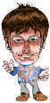

About Nology Games
Nology is a former game development company from Brazil. The company existed for 5 years and developed casual games. Unfortunately, the income from the games was not enough to sustain the company. In the end of 2004, the company was closed after finishing the last game - Chip$ - and publishing a game development book in Brazil.
You can find all of our games published all around the world in the Internet. The publishers continued to distribute them and we seldom received royalties after 2005. Because of that, and since we have the intellectual property rights, we decided to put all our games here for free.
The Team
Below you can see the team that ran Nology and created the games during its existence!

From left to right: Alexandre, Ana, Betinho, Guilherme, Leo, Vanessa, Antonio, Vitor and Felipe (missing photo for now).
The Games
Feel free to download and play our games below!
Koko Arena - JoKenPo - Cookie Chef - Hello! - Super Popcorn Machine - Chip$